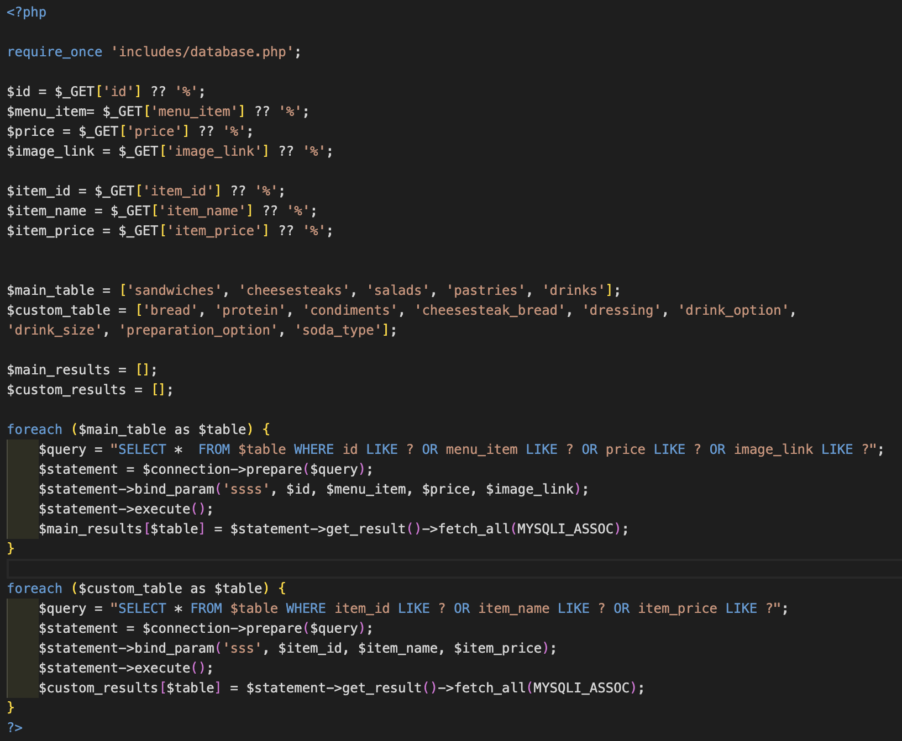

Project Overview
Our team designed and developed a mobile ordering app for Pete's Little Lunchbox, streamlining the confusing and cluttered menu and ordering flow while preserving its signature red branding. We utilized Figma to create and refine prototypes through user testing before bringing the design to life with HTML, CSS, JavaScript, PHP, and a MySQL database. We kept our workflow organized and efficient through Microsoft Teams and FigJam.
Our goal is now to enter the final stages of research and iteration to ensure an intuitive and user friendly experience before developing the final product.
Details
Role: Backend Developer and Data Architecture
My team:
- Sreeja Satish - Project Manger and Data Architecture
- Yi Huan Yang - Project Manager and Designer
- Fei Young - Designer and Frontend Developer
- Maple Tieu - Designer and Data Architect
Languages: PHP, mySQL, HTML, CSS, Javascript
Context and Challenge
Background
In a previous course, we were tasked to design a functioning Figma prototype for a food truck app. We took this project further by refining the design and developing a functional and dynamic app through repetitive user research and testing.
Problem
Though Pete's menu initially appeared extensive, it was actually quite small—the illusion of length came from the many customization options displayed at a glance. This presented a unique challenge, as we needed to streamline the menu in a way that maintained its variety without overwhelming users.
Additionally, the business lacked a social media presence or branding beyond the truck itself, which featured a red, white, and black color scheme. This gave us creative freedom but also solidified red as the dominant color in our design. Red proved to be both a challenge and an asset—its bold presence made a strong visual impact, yet required thoughtful application to avoid overwhelming the branding. In the end, it became a defining element of Pete's identity, striking a balance between vibrancy and usability.
Goal and Objectives
Our goals for this project included:
- Incorporate a dynamic MySQL database to easily pull menu items information
- Seamless PHP integration to simplify and clean repetitive code
- Create item detail pages that include customization options in order to simplify the number of repetitive menu items
- Incorporate an intuitive and clean navigation system and filtering system
- Create a strong brand identity through the use of a mascot and a consistent color scheme
How we will measure sucess:
Our goal is to achieve 90% positive feedback from users as we move from the first user testing to the final user testing. This means ensuring that the web app is intuitive, user-friendly, and meets the needs of our target audience. Additionally, we aim for the web app to function seamlessly, eliminating any bugs or technical issues that could hinder the user experience. By continuously refining the interface, improving performance, and addressing user concerns, we strive to create a polished and reliable product.
-->
Timeline
Although the project lasted for 10 weeks with three main stages—Alpha, Beta, and Final—I primarily focused on backend development, so my personal timeline consisted of three key stages:
-
Getting Started - In this initial phase, I focused on setting up the worksheet and database, laying the groundwork for data storage and retrieval. This step was crucial in ensuring a structured and scalable foundation for the web app.
-
Alpha Phase - During this phase, I developed the static pages using only HTML and CSS, translating the Figma prototype into a live webpage. The goal was to accurately bring the visual design to life while maintaining responsiveness and accessibility.
-
Final Phase (Backend Integration) - This stage involved integrating PHP and SQL into the project, making the web app interactive. I worked on features like handling user input, managing the cart, storing order details, and ensuring seamless database connectivity to create a functional and dynamic user experience.
Process and Insight
Getting started
Before starting the prototype, I collaborated with the team's data architecture to clean and structure Pete's menu in a well-organized spreadsheet. I then built a MySQL database, ensuring all necessary tables were set up for seamless integration into the project. To enhance user experience and minimize redundancy, we streamlined the menu by consolidating similar items. For example, instead of listing 10 separate breakfast sandwiches, we combined them into a single customizable option, allowing users to select their preferred bread, protein, and condiments. This approach made the menu more intuitive and easier to navigate.

The original menu
With the database in place, I implemented a PHP script to dynamically fetch menu data, ensuring smooth integration with the front end. Using prepared statements for security, the script queries both the main menu tables and customizable ingredient tables based on user-provided GET parameters. The retrieved data is stored in associative arrays, enabling efficient processing and seamless display within the app.

The site below displays all the data (items, price, and images) retrieved from the database.
Solution
For this project, our team designed and developed a seamless online ordering experience with a user-friendly interface and smooth interactions. The web app allows users to browse the menu, customize their orders, and proceed through checkout with ease. Below are the key design and development highlights that define the final product:
User Experience & Navigation
The navigation structure is intuitive, ensuring users can smoothly transition between menu selection, cart review, and checkout. The shopping bag dynamically updates, reflecting real-time changes when items are added, removed, or modified. If the cart is empty, the screen displays a friendly message with a call-to-action button leading users back to the menu.
Checkout Process
Users can finalize their order by selecting a payment method, pickup time, and tip amount. The default settings ensure a quick ordering process, with pickup set to "ASAP" and no tip selected. These preferences are stored in localStorage, allowing users to revisit the checkout page without losing their selections.
The payment method selection provides multiple options such as Google Pay, Apple Pay, Venmo, or cash on pickup. The UI updates dynamically based on the user's selection, ensuring a smooth checkout experience.
Live Project